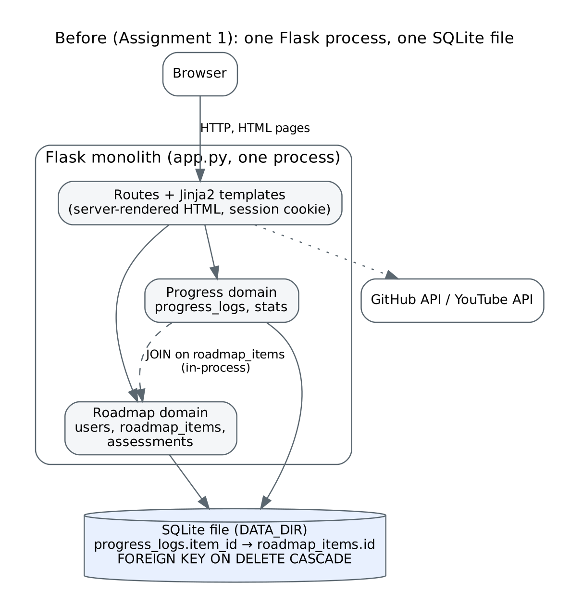
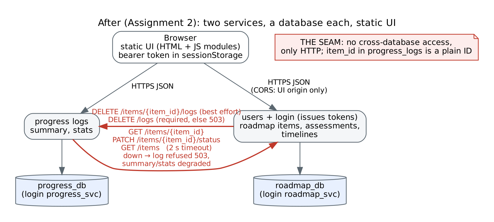
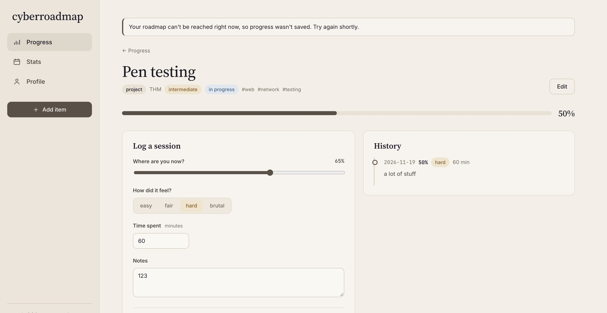
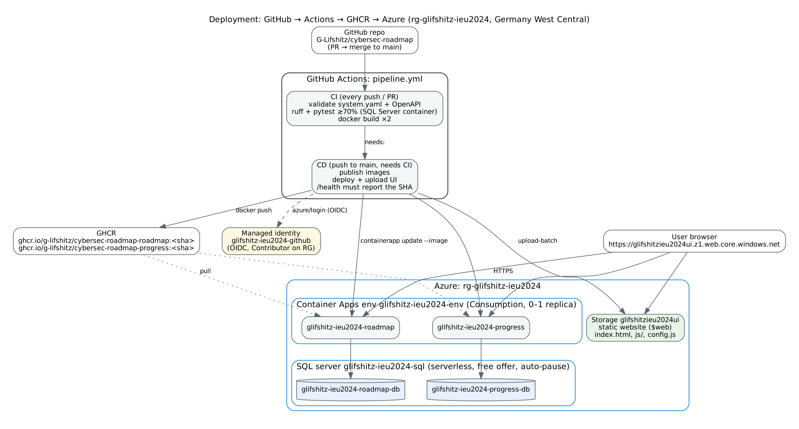
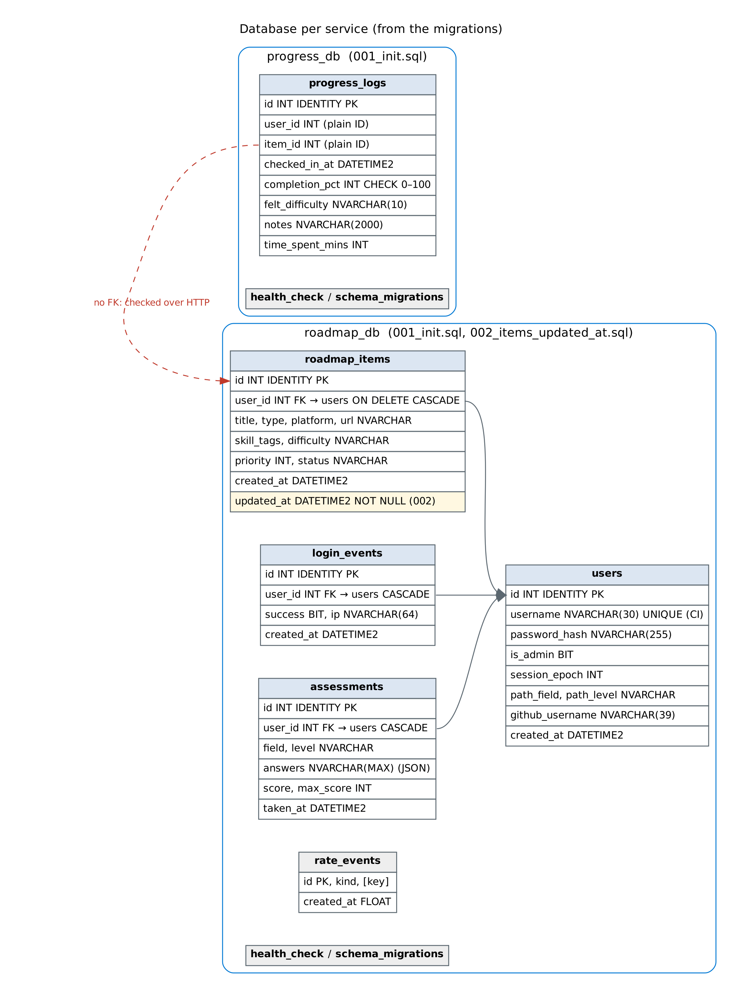
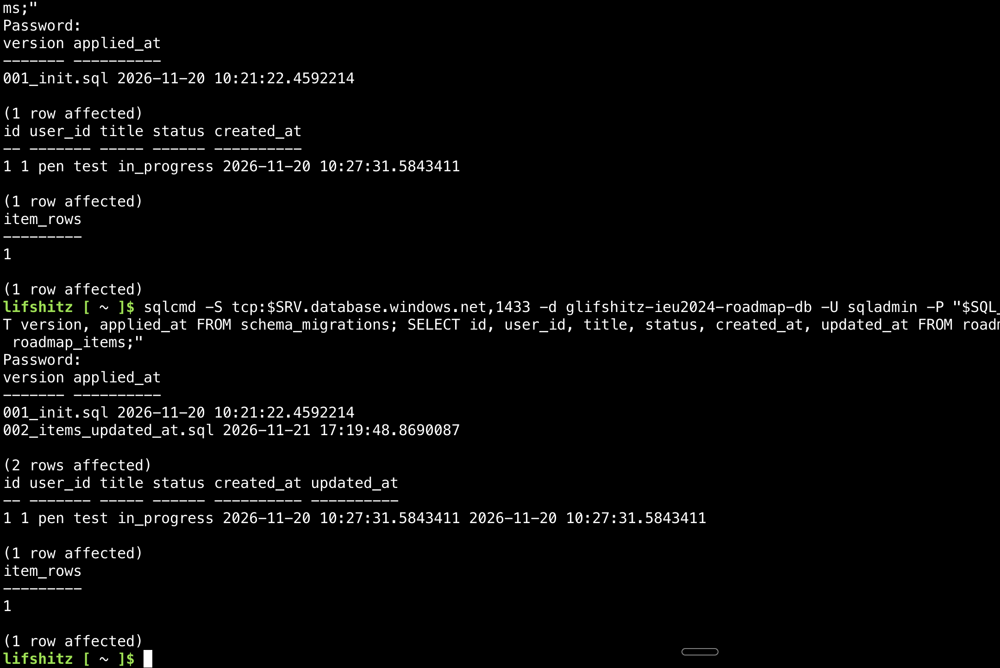

The Assignment 1 monolith (one Flask process, Jinja2 pages, one SQLite file) is now two Flask services, each in its own container with its own serverless SQL database, plus a static UI. No features were added; the work was moving the seam from inside one process to the network, and then building, testing and deploying the result automatically. The split follows ADR 2 unchanged: roadmap owns accounts, roadmap items, assessments and timelines; progress owns only the progress logs and the summary and statistics built from them (ADR 6).


The browser calls both services; the token roadmap issues at login (signed with a secret both services share, ADR 6) is forwarded on every call between them, so each service only ever acts for the user who made the request. Every outbound call has a 2 s timeout.
| Call | Why | If the other service is down |
|---|---|---|
progress → GET /items/{item_id}, PATCH /items/{item_id}/status | Before saving a log, check the item exists and belongs to the user, then move its status (the user-visible flow that crosses the seam server side). | Log refused with 503 roadmap_unavailable; nothing is saved. |
progress → GET /items | Skill tags for the summary and statistics (the old JOIN). | Degraded: everything progress owns is returned, tag-based parts are left out, roadmap_available: false. |
roadmap → DELETE /items/{item_id}/logs | Replaces ON DELETE CASCADE when an item is deleted. | Best effort: item deleted, orphan logs stay and are never shown (ADR 7, ADR 10). |
roadmap → DELETE /logs | Account deletion must remove the user's logs too. | Account kept, 503; the user retries. |
With docker compose stop roadmap, the progress pages still list the user's logs, the summary loads without its tag breakdown, and logging new progress shows the designed message instead of a stack trace or a hang. The response behind it:
POST /logs → 503 Service Unavailable Retry-After: 30
{"error": "roadmap_unavailable",
"message": "Your roadmap can't be reached right now, so progress wasn't saved. Try again shortly."}

docker compose stop roadmap: the page was opened before roadmap was stopped; the user stays logged in (progress verifies the token itself), saving a 65% log shows the designed message, and the history still shows only the earlier 50% entry, so nothing was saved.
rg-glifshitz-ieu2024 (Germany West Central), created once by infra/azure-setup.sh and changed afterwards only by the pipeline.Resources and cost model. Two Container Apps (glifshitz-ieu2024-roadmap, -progress) in one Consumption environment, 0.25 vCPU / 0.5 GiB, 0 to 1 replicas, billed per second only while a replica runs. Two serverless databases on one logical server (glifshitz-ieu2024-sql) on the free offer, which pause after 60 minutes idle. The storage account glifshitzieu2024ui serves the static site and is billed per GB stored and transferred (pennies). Images are on GHCR, which is free. The managed identity glifshitz-ieu2024-github has Contributor on the resource group only and is trusted through OIDC for runs on main, so no Azure password exists anywhere. Database URLs and the token secret are GitHub secrets passed to Container Apps as secrets. Idle cost is effectively zero (ADR 8).
Scale to zero and cold starts. After an hour idle, the first request starts a container and finds the database paused; resuming takes up to a minute, during which connections fail with error 40613 (which I hit myself while querying the paused database). Each layer absorbs this instead of avoiding it: the migration runner waits up to 180 s for the database before gunicorn starts; each request retries its connection with backoff for up to 90 s and otherwise answers 503 starting_up with Retry-After; the UI retries GETs for up to 90 s behind a "starting up" banner; the CD health check waits up to 6 minutes. Maximum one replica means migrations at startup can never run twice at once (an sp_getapplock guards them anyway). At 100x traffic I would raise the replica maximum (moving rate limits and migrations off the request path: migrations as a pipeline step before the new revision), set minimum replicas to 1 to remove cold starts at a fixed cost, leave the serverless free offer for a provisioned tier with connection pooling, and put a cache or a message broker in front of the cross-seam calls (ADR 10).

progress_logs.item_id and user_id are plain IDs: the foreign key to roadmap_items could not cross databases, so integrity is checked over HTTP on insert and compensated on delete. updated_at (highlighted) was added by migration 002.The schema is defined by numbered files in each service's migrations/ folder. A small runner (migrate.py) applies the ones not yet recorded in schema_migrations, in order, each in one transaction, at container start before gunicorn; a second start applies nothing. Each service connects with its own login (roadmap_svc, progress_svc) that has no access to the other database. Migrations are forward-only; applied files are never edited, and the recovery plan is in ADR 7: a failing migration rolls back in its transaction and the container does not start, so the deploy fails with the old schema intact and the fix is a new migration; data damaged by a migration that succeeded is recovered with Azure SQL's point-in-time restore.
002_items_updated_at.sql changes a table that already held data without recreating it: add updated_at as nullable, backfill it from created_at, then make it NOT NULL with a default. It was deployed by CI/CD run #7 (merge of PR #2, 21 November). I queried glifshitz-ieu2024-roadmap-db with sqlcmd before and after, through a temporary firewall rule that was removed afterwards:
schema_migrations | roadmap_items | |
|---|---|---|
| Before the deploy | 001_init.sql only | 1 row: id 1 "pen test", in_progress, created 2026-11-20 10:27:31; no updated_at column |
| After the deploy | 001_init.sql, 002_items_updated_at.sql (applied 2026-11-21 17:19:48 UTC) | The same row, unchanged, with updated_at = 2026-11-20 10:27:31 (backfilled) |
At startup the runner logs one line per file it applies (migration applied: 002_items_updated_at.sql) and then migrations up to date (N applied on this start).

updated_at) and after it (bottom: 002 recorded, same row, updated_at backfilled).One workflow, .github/workflows/pipeline.yml (ADR 9). On every push and pull request, CI validates system.yaml against the course's system.schema.json and both openapi.yaml files against the OpenAPI specification, then per service runs ruff and pytest against a SQL Server service container set up by the same db/init.sql as compose, failing below 70% coverage, and builds both images. On a push to main only, the CD jobs need all of those, so nothing is deployed from a commit that failed CI: they push images tagged with the commit SHA to GHCR, deploy them, write config.js with the two service URLs and upload ui/ to $web, and fail unless both /health endpoints return 200 with that SHA as version. CI never touches Azure SQL.
Cross-seam test. services/progress/tests/test_api.py runs progress's real API and models against a stub of roadmap: success, roadmap down (503, nothing saved), the status update failing, and the degraded summary and statistics. A stub instead of the compose stack keeps CI fast and makes "roadmap is down" a deterministic test case; the real network is exercised by hand with docker compose stop. Deliberately not tested automatically: the UI's JavaScript, the network between the containers, and Azure-only behaviour, which the post-deploy health check covers.
Observability. GET /health on each service writes and reads its own health_check row and returns {"status":"ok","db":"ok","version":"<sha>"}, or 503 if its own database is unreachable (never because of the other service). Each request logs one line to stdout: method, path, status and duration.
main: #7 (deployed migration 002) and #18 (latest at the time of writing).logging.basicConfig(force=True) replaced pytest's capture handler, and the first Dockerfiles used COPY . . and the compose file was named compose.yaml, both against the brief, which was fixed in d7f134a before CI saw them. I did not stage a failure to produce a red run.README.md covers running the whole system with docker compose up --build from a clean clone (UI on 8080, roadmap 8001, progress 8002), running one service on its own, running lint, tests and coverage per service, how deployment works, every command of the initial Azure setup (infra/azure-setup.sh, idempotent), how the migration evidence was collected, and the live URL. It also notes that the system runs on my personal Azure for Students subscription because the one on my IE account expired and could not be renewed.
system.yaml and the OpenAPI documents, write migration 002, draft ADRs 6 to 10, the README, the diagrams and this report, and walk me through collecting the evidence on Azure. The output was used as a starting point for each change: I ran the stack and the tests on my own machine, did the Azure setup and every push myself, reviewed and corrected what I found wrong while testing, and decided what to keep. Every interaction is listed with its commit in AI_USAGE.md, including an explanation in my own words of each infrastructure file.